🎶💃 Dance and Music of Goa – Rhythms of Joy and Tradition 🎵🥁
💃 Fugdi – Energetic Folk Dance
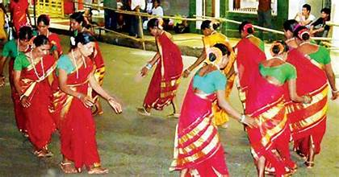
Fugdi 💃
A traditional folk dance performed by women during Ganesh Chaturthi and other festivals.
Characterized by synchronized circular movements and rhythmic clapping.
Dhalo 🕺
A celebratory dance performed by village women.
Accompanied by songs that narrate mythological stories and folklore.
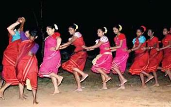
Accompanied by songs that narrate mythological stories and folklore.
🎭 Mando – A Legacy of Love and Heritage
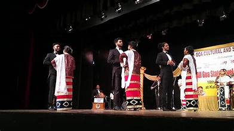
Mando 🎼
A graceful dance that blends Portuguese and Goan cultures.
Accompanied by melodious Konkani songs reflecting tales of love and heritage.
Kunbi Dance 🎉
Performed by the tribal Kunbi community.
Reflects the simplicity of rural life and agricultural practices.
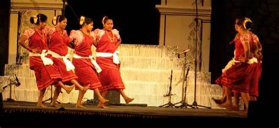
🥁 Traditional Musical Instruments of Goa
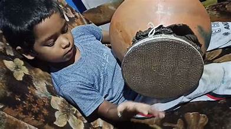
Ghumat 🥁
A traditional percussion instrument made from clay and animal hide.
Used extensively during festivals and religious ceremonies.
Shenai 🎺
A wind instrument that adds a soulful charm to Goan music.
Played during weddings and festive occasions.
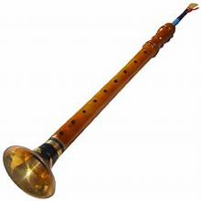
🕺 Corridinho – Echoes of Portuguese Influence
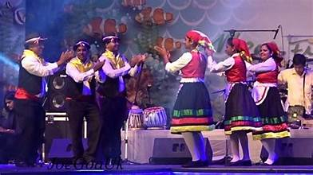
Corridinho 🕺
A vibrant Portuguese-inspired dance performed in colorful attire.
Symbolizes the fusion of European and Goan cultures.
Zagor Folk Theater 🎭
A traditional performance combining dance, drama, and music.
Narrates Goan folklore and socio-cultural tales.
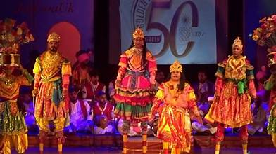
🎸 Western Influence – Modern Beats of Goa
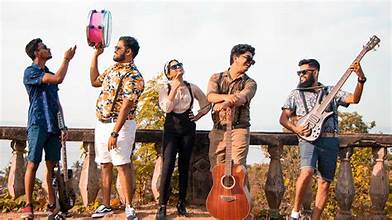
Western Music 🎸
A significant part of Goa's vibrant nightlife and music culture.
Fusion of jazz, reggae, and EDM captivates tourists and locals alike.
Trance Music 🎧
Goa’s globally renowned genre that attracts music lovers from around the world.
Originating in the 1980s, trance music defines Goa’s beach parties and festivals.
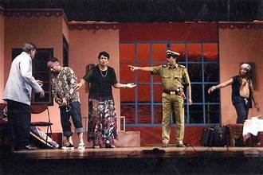
🎭 Tiatr – Goa’s Unique Theatrical Art
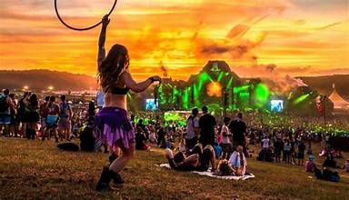
Tiatr 🎭
A distinct Goan theatrical art form blending comedy, music, and social commentary.
Performed in Konkani with a focus on relevant social themes.
Fado Songs 🎤
Portuguese-inspired melancholic songs that narrate stories of longing and love.
Known for its soul-stirring melodies and deep emotional expressions.
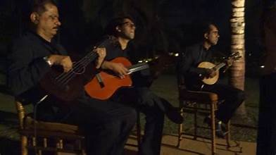